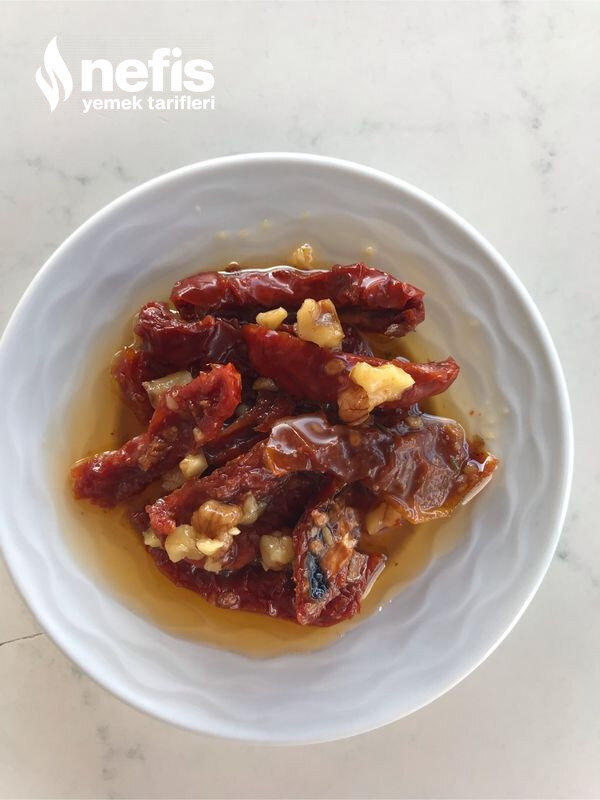

🍽️ 6-8 kişilik⏱️ Hazırlık: 15 dk🏷️ Kahvaltılık Tarifler
Malzemeler
- 250 gram kuru domates
- 1 çay bardağı ceviz
- 1 çay kaşığı karabiber
- 1 çay kaşığı pulbiber
- 1 tatlı kaşığı kekik
- 1 su bardağına yakın sıvı yağ
Hazırlanışı
- Önce domatesleri yıkıyoruz.
- Sonra domateslerin üzerini örtecek kadar sıcak su ekliyoruz.
- 20 dakika kadar sıcak suda bekletiyoruz.
- Çıkarınca suyunun gitmesi için serip biraz kurumasını sağlıyoruz.
- Domatesleri doğruyoruz.
- Baharatlar, ceviz ve yağ ilave ederek iyice karıştırıyoruz.
- Nefis kahvaltılık kuru domatesimiz hazır.